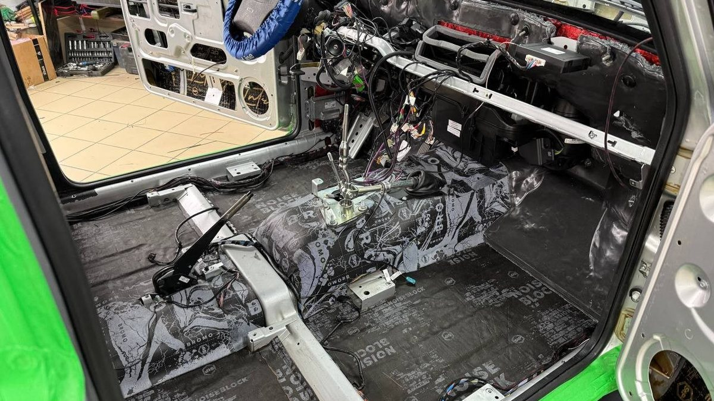

Если ваш брелок перестал видеть машину, а сигнализация срабатывает сама по себе, чаще всего виновата не вся система, а одна мелочь. Её можно найти по симптомам.
Три часа ночи. Во дворе воет сирена, и вы уже по звуку понимаете – ваша. Вы хватаете брелок, жмёте отключение, а он молчит. Приходится в куртке поверх пижамы бежать вниз, открывать машину ключом и слушать, как в окнах по всему дому зажигается свет. Утром соседи в лифте смотрят так, будто это вы лично включили сирену в три часа.

Брелок не видит машину
Первое и самое частое – батарейка в брелоке. На морозе она садится быстрее и может отказать внезапно: вечером всё работало, утром нет. Поменяйте её, прежде чем думать о худшем.
Если не помогло, попробуйте запасной брелок. Работает запасной – дело в основном: его могли уронить, намочить в кармане со снегом, сбить привязку к машине. Не работает и запасной – ищите в машине.
В машине сигнал от брелока ловит антенный модуль. Обычно он стоит на лобовом стекле. После замены стекла, снятия обшивок или просто от старости провод к нему мог отойти или переломиться. Тогда брелок «бьёт» только вплотную к машине или не бьёт совсем.
Есть и внешние причины. Возле мощных передатчиков и в плотных дворах сигнал брелока слабеет, и в одном месте всё работает, а в другом нет. Если проблема только у одного дома – скорее всего, дело в месте.
Сигнализация орёт сама
Ложные тревоги зимой – отдельный жанр. Самая частая причина – датчик удара настроен слишком чутко. Снег, упавший с крыши или с ветки, проезжающий снегоуборщик, сосед, который хлопнул дверью своей машины, – всё это датчик принимает за попытку взлома.
Вторая – концевики, датчики, которые следят, закрыты ли двери, капот и багажник. Зимой в них попадает влага с реагентами, контакт окисляется, и система «видит» открытый капот там, где он закрыт.
Третья – аккумулятор. В мороз напряжение проседает, и электроника машины может вести себя странно, а сигнализация – реагировать на это тревогой. Если машина утром заводится тяжело и при этом ночью шумит, начинать стоит с батареи.

Чего не делать
Не отрезайте сирену. Кажется, что проблема решена, но вы просто оставляете машину без голоса, а причина никуда не уходит. Если датчик удара сходит с ума, его чувствительность регулируют, а не выключают систему целиком.
Не лезьте в проводку сами, если не понимаете, что делаете. Сигнализация связана с блокировками двигателя, и неудачно разорванный провод может оставить вас утром с машиной, которая не заводится.
И не терпите месяцами. Сигнализация, которая орёт без повода, приучает и вас, и соседей не обращать на неё внимания. В ту ночь, когда к машине подойдут по-настоящему, никто даже не выглянет в окно.
Что сделать сейчас
Поменяйте батарейку в брелоке и попробуйте запасной. Проверьте, легко ли заводится машина по утрам. Если ложные тревоги идут после снегопада или в ветер – запомните это, мастеру такая деталь сразу подскажет, куда смотреть. Запишите модель сигнализации: она указана на брелоке или в документах.
Мы в Ярославле – студия «Автостиль», проспект Октября, 82б. Ставим охранные системы и поддерживаем их после установки: можно приехать или позвонить с вопросом. Подробнее – на странице про охранные системы. Расскажите по телефону, что происходит и какая у вас сигнализация, – подскажем, с чего начать: +7 902 220-75-55.